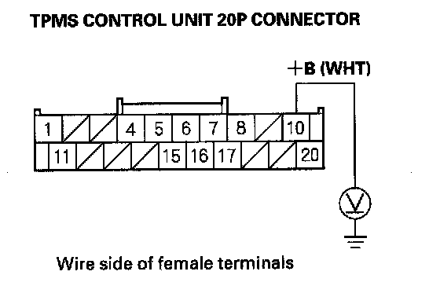
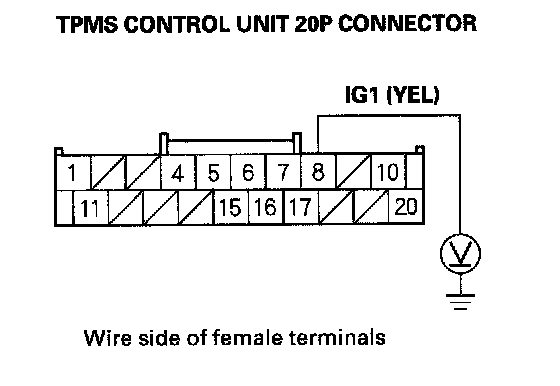
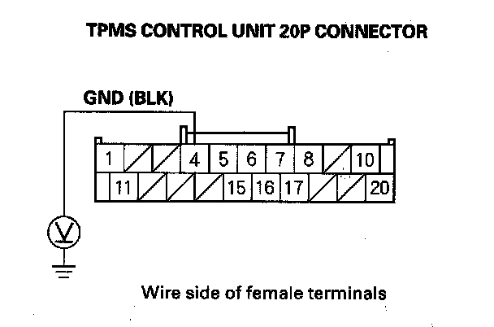

TPMS Indicator Does Not Go Off, and No DTCs Are Stored
TPMS indicator does not go off, and no DTCs are storedNOTE: Check for gauge DTCs with the HDS. If gauges DTCs are stored, troubleshoot those DTCs first.
1. Turn the ignition switch ON (II).
2. Check the TPMS indicator for several seconds when the ignition switch is turned ON (II).
Did the indicator come on and then go off?
YES - The system is OK at this time.
NO - Go to step 3.
3. Turn the ignition switch OFF.
4. Check the No. 1 (7.5 A) fuse in the under-dash fuse/relay box.
Is the fuse blown?
YES - Replace the No. 1 (7.5 A) fuse, and recheck.
NO - Reinstall the fuse, then go to step 5.
5. Check the No. 21 (7.5 A) fuse in the under-dash fuse/relay box.
Is the fuse blown?
YES - Replace the No. 21 (7.5 A) fuse, and recheck.
NO - Reinstall the fuse, then go to step
6. Measure voltage between body ground and TPMS control unit 20P connector terminal No. 10.

Is there battery voltage?
YES - Go to step 7.
NO - Repair open in the wire between the TPMS control unit and the No. 1 (7.5 A) fuse in the under-dash fuse/relay box.
7. Turn the ignition switch ON (II).
8. Measure voltage between body ground and TPMS control unit 20P connector terminal No. 8.

Is there battery voltage?
YES - Go to step 9.
NO - Repair open in the wire between the TPMS control unit and the No. 21 (7.5 A) fuse in the under-dash fuse/relay box.
9. Measure voltage between body ground and TPMS control unit 20P connector terminal No. 4.

Is there 0.1 V or more?
YES - Repair open or high resistance in the wire between the TPMS control unit and body ground (G401).
NO - Do the troubleshooting for the gauge control module. If the gauge control module is OK, check for loose terminals and poor connections at the TPMS control unit. If necessary, substitute a known-good TPMS control and recheck.